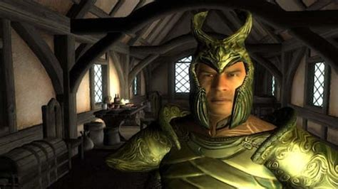

Release of Oblivion
The Elder Scrolls IV: Oblivion is a action role-playing game Released in 2006 and developed by Bethesda Game Studios, as well as co-published by Bethesda Softworks and 2K Games. It is the fourth installment in The Elder Scrolls series, following 2002's The Elder Scrolls III: Morrowind, and was released for Microsoft Windows and Xbox 360 in 2006, followed by PlayStation 3 in 2007. Upon release, Oblivion was a critical and commercial success, winning a number of industry and publication awards, notably including the Game of the Year award of 2006. It was praised for its impressive graphics, expansive game world, and schedule-driven NPCs, and is considered one of the greatest games ever made. Following a number of smaller content releases, Bethesda released two expansion packs for the game—Knights of the Nine and Shivering Isles—which were bundled with The Elder Scrolls IV: Oblivion Game of the Year Edition in 2007, and later re-released as a fifth-anniversary edition in 2011.
The Big Plot
Main Story
The game begins with the player character (the Hero) imprisoned in Cyrodiil. Emperor Uriel Septim VII uses the prison as an escape route during an assassination attempt and entrusts the Hero with the Amulet of Kings, a sacred relic necessary to maintain barriers between the mortal world and the demonic realm of Oblivion. After the Emperor is killed, the Hero discovers his illegitimate son, Martin Septim, a priest unaware of his royal lineage. Together with the Blades, the Hero works to close Oblivion Gates—portals through which the Daedric Prince Mehrunes Dagon sends monstrous forces. In the climax, Mehrunes Dagon invades Cyrodiil outright. Martin shatters the Amulet and transforms into an avatar of the dragon-god Akatosh, defeating Dagon but sacrificing himself. The Oblivion crisis ends, and the Empire is left to rebuild without an emperor.
Knights of the Nine
The expansion begins when the player hears rumors of a holy pilgrimage. An ancient evil, Umaril the Unfeathered, has returned. Umaril is an Ayleid sorcerer-king who once ruled over humans with cruelty. He was defeated long ago by the legendary Divine Crusader, Pelinal Whitestrake, but not truly destroyed. Umaril has now returned, empowered by his pact with the Daedric Prince Meridia, and begins slaughtering priests of the Nine Divines. You, the Hero of Cyrodiil, receive prophetic dreams and signs urging you to walk the path of Pelinal. To stand against Umaril, you must recover eight divine relics once worn by Pelinal Each relic can only be obtained by performing tasks demonstrating devotion to the corresponding Divine—acts of humility, mercy, justice, and purity. Along the way, you're tested morally as well as physically. When all relics are gathered, you become the new Divine Crusader.
The Shivering Isles
A mysterious doorway appears on an island in Cyrodiil. Through it lies the Shivering Isles, the split realm of Sheogorath, Daedric Prince of Madness. He summons you to become his Champion and help him face an imminent crisis known as the Greymarch. The Shivering Isles consist of two contradictory halves, mania and Dimentia. Both regions are ruled from the city of New Sheoth, divided into Bliss (Mania), Crucible (Dementia), and the Palace of Sheogorath. But the Isles are threatened by Jyggalag, Daedric Prince of Order—Sheogoraths ancient enemy. Every era, Jyggalag invades to purge the Isles of chaos. This destructive phase is the Greymarch.
Gameplay
Oblivion is an open world role-playing game (RPG) that incorporates open-ended gameplay. The player can follow side-quests, interact with NPCs, dispatch monsters, develop their character, and travel anywhere in the province of Cyrodiil at any time while playing the game, provided that the areas are not quest-specific and otherwise inaccessible when not questing. The game never ends, and the player can continue playing after completing the main quest. The gameplay includes a fast-travel system, in which an icon appears on the game world map every time the player visits a new location. This excludes the game world's main cities which are already unlocked for fast travel from the start of the game. The player can arrive at the desired location instantaneously by selecting the icon on the map. This was an improvementy over Morrowind, where you had to walk or take a silt strider anywhere. The skills worked the same as morrowind, but as the player developed skills to certain levels, they would gain new abilities with the skills. At skill levels 25, 50, 75, and 100.